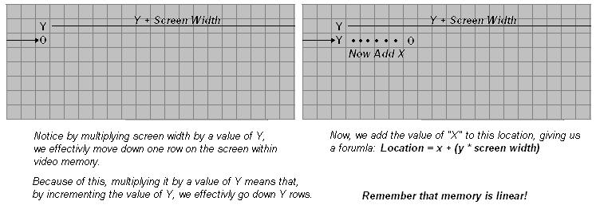

| Operating Systems Development Series | |
|
Prepare for the Kernel part 1
はじめにようこそ!:)これまで、私たちは多くのことを学んできたのではないでしょうか。OSの開発がいかに複雑であるかということがおわかりいただけたと思います。しかし、それでもなお、難しくなる一方です。 今回は2部構成のチュートリアルの第1回目です。最初のパートでは、アセンブリによる基本的な 32 ビットグラフィックプログラミングについて詳しく説明します。これには以下が含まれます。基本的なVGAプログラミングのコンセプト、ビデオディスプレイへのアクセス、文字列の印刷、画面のクリア、ハードウェアカーソルの更新などです。少し数学が入りますが、それほど多くはありません :) デモ自体は完成しています。このチュートリアルの第2部では、新しい小さな FAT12 ドライバである Floppy ドライバを含む、完成した Stage 2 ソースコードの概要を紹介します。 これらは、私たちが追加する定義上「本物の」ドライバではありません。しかし、これらはドライバの機能と、なぜそれらが有用であるかを示すのに役立ちます。すべてのコードは、ブートローダからFAT12をロードするコードを大幅に修正したものなので、FAT12について再び詳しく説明するつもりはありません。 ステージ2の最後のチュートリアルであるパート2では、1MBの基本的な（純粋なバイナリ）カーネルイメージのロードと実行について説明します。 この 2 部構成のチュートリアルは、Stage 2 の最後のチュートリアルとなります!カーネルを起動するとき、さまざまな実行可能ファイル形式をカバーする必要があります。Stage 2がオブジェクトファイルを正しく実行することを確認する必要があります。このため、カーネルを起動するときに、現在の Stage 2 ブートローダにローダを追加して、カーネルを正しくロードすることを確認します。これは後の話ですが :) このチュートリアルのパート 1 では、このようなことを学びます。
準備完了 ディスプレイについてVGA - 理論VGA（Video Graphics Array）は、1987年にIBMから発売されたアノログコンピュータディスプレイの規格です。MDA、CGA、EGAが使用していたISA（Industry Standard Architecture）ボード内の数十個のロジックチップに代わる1つのチップとして開発されたため「Array」と呼ばれている。これが1枚のISAボードに収まっていたため、マザーボードへの接続が非常に容易だった。VGAは、ビデオバッファ、ビデオDAC、CRTコントローラ、シーケンサユニット、グラフィックコントローラ、アトリビュートコントローラで構成されています。ビデオドライバの話を始めるまで、まだすべてを詳しく説明しないことに注意してください。これは、主にスペースを節約するためと、VGAのプログラミングが非常に複雑になるため、物事をより簡単にするためです。 ビデオバッファビデオバッファは、ビデオメモリとしてマッピングされたメモリのセグメントである。どの領域のメモリをビデオメモリにマッピングするかは変更可能だ。起動時には、BIOSはビデオメモリを0xA0000.にマッピングしています（0xA0000.(チュートリアル7のリアルモードアドレスマップを覚えていますか？)これは重要です!ビデオDACビデオデジタルアナログコンバータ（DAC）には、ビデオデータをアナログビデオ信号に変換し、ディスプレイに送信するために使用するカラーパレットが含まれています。この信号は、赤、緑、青の強度をアナログで示します。後で詳しく説明しますので、まだ理解できていなくても気にしないでください。CRTコントローラこのコントローラは、水平・垂直同期信号のタイミング、ビデオバッファのアドレス指定、カーソルやアンダーラインのタイミングを生成します。カーソルを更新するときにCRTコントローラを経由する必要があるので、このチュートリアルの後半でより詳細に説明します。シーケンサシーケンサは、ビデオメモリの基本的なメモリタイミングと、再生バッファフェッチを制御するためのキャラクタクロックを生成します。このため、システムがアクティブな表示間隔中にメモリにアクセスすることができます。 もう一度言いますが、ここではまだ詳細を説明しません。後でビデオドライバについて詳しく説明しますので、ご安心ください。グラフィックコントローラビデオメモリと属性コントローラ、およびビデオメモリとCPUの間のインターフェースです。アクティブな表示時間帯には、ビデオバッファ（ビデオメモリ）からメモリデータが送られ、アトリビュートコントローラに送られます。グラフィックモードでは、このデータはパラレルからシリアルのビットプレーンデータに変換されて送信されます。テキストモードでは、パラレルデータだけを送信します。まだ理解していなくても気にしないでください。後でビデオドライバを開発するときに詳しく説明します。とりあえず、これだけは覚えておいてください。グラフィックコントローラは、ビデオメモリからのパラレルデータからディスプレイをリフレッシュします。これは、ディスプレイがアクティブな時間に基づいて自動的に行われます。つまり、ビデオメモリ（デフォルトでは0xA0000にマッピング）に書き込むことで、現在のモードによっては、実質的にビデオディスプレイに書き込むことになるのです。これは、文字を印刷するときに重要です。 グラフィックスコントローラで使用されるアドレス範囲を変更することが可能であることを忘れないでください。初期化の際、BIOSはビデオメモリを0xA0000にマップするために、まさにこれを行います。 ビデオモードビデオモード」とは、表示の仕様のことである。つまり、ビデオメモリーをどのように参照し、そのデータをビデオアダプターでどのように表示するかを記述している。VGAは2種類のモードをサポートしています。APAグラフィックスとテキストです。 APAグラフィックスAPA（All Points Addressable）とは、ビデオモニターやドットマトリクスなど、画素配列で構成された装置において、各セルを個別に参照できる表示モードのこと。 ビデオ表示の場合、各セルは「画素」を表し、各画素は直接操作することができる。このため、ほとんどすべてのグラフィックモードがこの方式を採用しています。このピクセルバッファを変更することで、画面上の個々のピクセルを効果的に変更することができるのです。画素（ピクセル ピクセルとは、ディスプレイ上で表現できる最小の単位です。ディスプレイ上では、色の最小単位を表し、基本的には1つのドットとなります。各ピクセルの大きさは、現在の解像度とビデオモードに大きく依存します。 テキストモードテキストモードとは、APAのように画面上のコンテンツをピクセルではなく、文字で内部表現する表示モードです。ビデオコントローラは、テキストモードを実装する場合、2つのバッファを使用します。キャラクタマップは表示される個々の文字のピクセルを表し、バッファは各セルにどのような文字があるのかを表します。キャラクタマップバッファを変更することで、文字そのものを変更し、新しい文字セットを作成することができます。各セルの中にある文字を表すスクリーンバッファを変更することで、画面上に表示される文字を実質的に変更することができます。 テキストモードによっては、文字の色や、点滅、下線、反転、明るさなどの属性を指定することもできます。 MDA、CGA、EGAVGAは、MDA、CGA、EGAをベースにしていることを忘れないでください。VGAは、これらのアダプタが行うモードのほとんどをサポートしています。これらのモードを理解することは、VGAをよりよく理解することにつながります。MDA - 理論編私が生まれる前の1981年に、IBMはPC用の標準的なビデオディスプレイカードを開発しました。モノクロディスプレイアダプタ（MDA）、モノクロディスプレイ＆プリンタアダプタ（MDPA）である。MDAにはグラフィックモードは一切なかった。80列×25行の高解像度テキスト文字を表示できるテキストモード（Mode 7）を1つだけ持っていた。 このディスプレイアダプターは、古いPCでよく使われていた規格である。 CGA - 理論編また、1981年にはCGA（Color Graphics Adapter）を開発し、PC用カラーディスプレイの標準規格を初めて策定した。CGAは、1ピクセルあたり4バイトに制限されていたため、16色のカラーパレットしかサポートしていなかった。 CGAは、以下の2つのテキストモードと2つのグラフィックモードをサポートしていた。
EGA - 理論編1984年にIBMが発表したEGA（Enhanced Graphics Adapter）は、最大解像度640×350ピクセルで16色のディスプレイを実現した。VGAアダプタは、80x86マイクロプロセッサファミリーと同様に、下位互換性があることを覚えておいてください。このため、BIOSは80列×25行をサポートするMode 7（元はMDA）で起動します。これは私たちにとって重要なことで、私たちはこのモードで使用しています。 VGAメモリのアドレス指定VGAコントローラで使用されるビデオメモリは、PCのメモリに0xA0000から0xBFFFFまでマッピングされています。 チュートリアル5のリアルモードメモリマップを思い出してください。通常、ビデオメモリは次のようにマッピングされています。
ビデオアダプタカードが使用するメモリマッピングは、CRTマイコンを通じて変更することが可能です。通常、これはビデオドライバを介して行われます。これについては、後で詳しく説明します。 また、Video Controllerがこのメモリをどのように使用するかを変更することも可能です。そうすることで、「新しい」、いや、「文書化されていない」モードを作ることができます。よくあるモードの1つは、悪名高い「モードX」です。 ディスプレイバッファとテキストバッファを変更すると、画面に表示される内容が事実上変更されるのを覚えていますか？これは、ビデオコントローラが現在のリフレッシュレートに基づいてディスプレイをリフレッシュするために行われます。ビデオコントローラは、VGAポートを介してモニタ内部のCRTコントローラにコマンドを送信します。これにより、CRTの垂直方向と水平方向のリトレースが発生し、モニターの表示が更新されます。また、テキストとディスプレイのアダプタは、上記のPCのメモリアドレスにマッピングされているため。 このメモリ領域に書き込むと、画面に表示される内容が変化する 例えば、今が「モード7」であることを思い出してください。モード7はカラーテキストモードなので、0xB8000で始まるメモリを使用します。これはビデオコントローラが表示内容を決定するためのテキストバッファなので、0xB8000に書き込むと、実質的に画面にテキストが表示されることになります。 この場合、ディスプレイの左上隅に白と黒の背景（The attribute）で「A」という文字が表示されます。 文字の印刷さて、では、画面上の任意のx/y位置に文字を表示するにはどうしたらいいのでしょうか？メモリの特殊な性質として、メモリの線形性があります。表示されている行の終端に到達すると、次のバイトはその直下の行にあります。リニアアドレスのため、画面に表示するためには、x/yの位置をリニアアドレスに変換できなければなりません。 そして、それを行うための特別な数式は、x + y * 画面幅です。  以下はその例です。例えば、文字'A'を x/y (5,5) にプリントするとします。 ビデオメモリは0xb8000で始まり、リニアなので、この x/y 位置を絶対アドレスに変換する公式を使用することができます。 つまり、0xB8195 に文字 'A' を書き込めば、実質的に x/y の位置 (5,5) に書き込むことになります。クールでしょう？ これは、BIOSのように動作させるためで、他のプログラムには必要ありません。 ここはモード7であることを思い出してください。このモードでは、1行に80文字、25行の列があります。 そしてもちろん、ビデオメモリは0xB8000から始まります。でも、ちょっと待ってください。文字属性ってなんだろう？ テキストモード7は、実際には1文字あたり1バイトではなく、2バイトを使用します。これを覚えておいてください! 1バイト目は実際の文字を表し、2バイト目は...お待ちください...属性バイトです!このため、Mode 7 で画面に文字を書き込むときは、1 バイトではなく2バイトを書き込む必要があります。 アトリビュートバイトは、色や、点滅などのアトリビュートを指定するためのものです。その値は
属性バイトは、特定の属性を定義するバイトであり、前景色と背景色の両方を定義する。このバイトは次のような形式をとる。
設定方法文字の印刷は少し複雑で、現在の x/y 位置とビデオメモリに書き込むときの位置を追跡する必要があります。また、改行文字のような特定の文字を追跡し、行末を監視する必要があります。さらに、ハードウェアカーソルをこの位置に更新することも必要です。Putch32は、ステージ2で文字を表示するpmodeルーチンです。心配しないでください、これらのルーチンはCを使ってカーネル用に書き直します。アセンブリでどのように行われるかを示すことによって、アセンブリ言語とC言語の関係を比較することができます。 ともかく、スタートアップ・コードを紹介しましょう。 さて、いくつかの基本的な定義ができました。_CurX と _CurY には、文字を書き込むための現在の x/y 位置が入ります。また、EDIにはビデオメモリーのベースアドレスが含まれています。つまり、ビデオメモリ[EDI]に書き込むことで、現在のビデオメモリマップに対応した文字を画面に表示することができるのです。 文字を表示する前に、それをどこに表示するかを調べなければなりません。そのためには、現在のX/Yの位置(_CurXと_CurY)に書き込めばいいのです。しかし、これはかなり単純ではありません。 ビデオメモリはリニアなので、x/yの位置をリニアメモリに変換しなければならないのです。x + y * スクリーン幅という公式を思い出してください。これは簡単に計算できますが、各文字は2バイトの大きさであることを忘れないでください。CurX、_CurY、COLS、LINESは、バイトではなく、文字に基づいていることを忘れないでください。1文字あたり2バイトなので、80*2で比較しなければならない。簡単でしょう？ このように、少し複雑になりますが、それほど難しいことではありません。 これは、y * 画面幅 (バイト)、または _CurY * (COLS*1 文字あたりのバイト数) という式の最初の部分です。これをスタックに格納することで、計算式を完成させることができます。 それでは!現在のバイト位置を得るために_CurXを2倍していることに注意してください。次に、y * COLSの結果をポップしてxの位置に追加し、x+y*COLSの式を完成させます。 やったー!さて、EAXには文字を表示するためのオフセットバイトが含まれているので、それをビデオメモリのベースアドレスを保持しているEDIに追加しましょう。 さて、これでEDIには書き込むべき正確なバイトが入り、BLには書き込むべき文字が入ります。もしその文字が改行文字であれば、次の行に移動します。そうでない場合は、その文字を表示するだけです。 さて、どうでしょう？かなり簡単でしょう？そうそう、次の行に移動するのは簡単です。
文字列の操作よし、これで文字を印刷できるぞ。イパーイ。一文字でもドキドキしちゃいますね。ええ、そんなことはありませんよ :)実際の情報を表示するには、完全な文字列を表示する方法が必要です。現在位置を追跡し(そして更新し)、文字を表示するルーチンはすでにあるので、文字列を表示するために必要なのは単純なループだけです。 では、Puts32()関数です。この関数は1つのパラメータを受け取ります。EBXはヌル文字で終端された文字列のアドレスで、これをプリントします。Putch32()関数では、印字する文字をBLに保存する必要があるので、EBXのコピーを保存する必要があり、ここでそれを行います。 では、ループさせます。 EDIを使用して文字列を参照し、表示する現在の文字を取得します。ヌルターミネーターのテストに注意してください。もし見つかれば、ベイルアウトします。さて、その文字を表示するには...最も複雑なコードです。 ...いや、そうでもないか:) あとは、次の文字に移動して、ループするだけです。
ほら!32ビットプロテクトモードで文字列をプリントする方法を手に入れました。難しいことじゃないでしょう？MovCurは何のためにあるのでしょうか？それは次に見てみましょう。 ハードウェアカーソルの更新さて、これで文字と文字列をプリントアウトできるようになりました。しかし、カーソルが動かないことにお気づきでしょうか？カーソルが動かないのです！このため、何をやってもそのままになってしまいます。このカーソルは、BIOSがテキストを印刷するときに現在の位置を示すために使用する単純な下線です。このカーソルは、ハードウェアによって処理されます。実際、CRTマイクロコントローラです。そこで、このカーソルを動かすために、基本的なvgaプログラミングを知る必要があります。 CRTマイコンCRTをお使いの方へのご注意このように、OSの環境では、ハードウェアを直接操作し、すべてをコントロールすることができることを忘れないでください。CRTモニターの故障は性質上激しく、爆発して鋭いガラス片が高速で飛び散ることがあります。また、周波数設定を変更すると、デバイスやマイクロチップが誤動作し、予期せぬ災害を引き起こす可能性があります。 このため、もし読者の皆様がこのコードで実験されるなら、実際のハードウェアに挑戦する前に、まずエミュレータですべての実験コードを最大限にテストされることをお勧めします。 ビデオドライバーの話をするまでは、ビデオプログラミングに関するすべての説明はしません。 その後に詳しく見ていきましょう。 というわけで、CRTコントローラについて説明します。 ポートマッピングCRTコントローラは、ポート0x3D5にマッピングされた1つのデータレジスタを使用します。チュートリアル7のポート表を覚えていますか？ CRTコントローラは、データレジスタのデータの種類を決定するために、インデックスレジスタという特別なレジスタを使用します。CRTコントローラにデータを渡すには、 2つの値を書き込まなければなりません。 一つはインデックスレジスタ（書き込むデータの種類を格納）、もう一つはデータレジスタ（書き込むデータを格納）です。それほど難しいことではありません。
インデックスレジスタは、ポート0x3D5または0x3B5にマッピングされます。 この2つ以外にもレジスタはありますが（Misc.Output Registerなど）、ここではこの2つに焦点を当てます。 インデックスレジスタのマッピングデフォルトでは、インデックス・レジスタのインデックスは次のようにマップされています。
インデックス・オフセット値を書き込むことにより、データ・レジスタがどのレジスタを指しているか（つまり、何を参照しているか）を示すことができます。 上表のほとんどは、今、気にする必要はないでしょう。しかし、インデックス0xEと0xFについては、ちょっと見てください。
ハードウェアカーソルの移動まず、カーソルのインデックスは0x0Eと0x0Fで、これをポート0x3D4のインデックスレジスタに入れる必要があることを思い出してください。これはインデックス0x0F（カーソルの下位バイトのアドレス）をインデックスレジスタに入れることです。これで、データレジスタ（ポート0x3d5）に入れられた値は、カーソル位置のローバイトを示すことになります。 これはカーソルの新しい下位バイトの位置を設定します!クールでしょう？上位バイトの設定も全く同じです。ただし、インデックスを0x0Eに設定しなければなりません。 以下は、このルーチンの完全版です。 簡単でしょう？ 次は画面を消去する 画面の消去テキストを表示する方法はすでにあるので、ループして、現在位置を0にリセットするだけです！これは驚くほど簡単です....簡単でしょう？ さて、テキストを印刷し、ハードウェアカーソルを更新し、画面をクリアする方法があります。もし望むなら、このステージ2ローダーを拡張して、カーネルに制御を与えるときに小さなメニューと高度なオプションを含めることができます。これについては後で詳しく説明します。 まとめ次のチュートリアルをどのように進めるか、かなり迷いました。私は、2つのパートに分けることが良い解決策だと信じています（希望！）。私たちはここで多くのこと、より具体的にはグラフィックの概念について説明しました。基本的なVGAの概念、文字、文字列の印刷、画面の消去、ハードウェアカーソルの更新について説明しました。 印刷するテキストの属性バイトを変更することで、簡単にいろいろな色で文字を印刷することができました！また、印刷された文字列の背景色を変更することもできました。属性バイトの色を変えて、ClrScr32()関数を呼び出せば、新しい背景を得ることもできます!クールだと思いませんか?確かに、白黒はつまらないですね... :) 次のチュートリアルではStage 2を終了し、1MBの基本的なピュアバイナリ32ビットカーネルイメージをロードして実行します。 心配しないでください--このシリーズのカーネルセクションに入ると、カーネルの構築方法を変更し、ロード方法を変更することになります。これにより、カーネルをオブジェクトフォーマットとしてロードし、シンボルのインポートやエクスポートを可能にし、C言語と混在させることができるようになるのです。 次のチュートリアルは、新しいことを学ぶという意味でのチュートリアルではありません。そのかわり、すでに説明されているコードをすべてカバーします。しかし、このコードは、より良いコードレイアウトと、基本的なファイルシステム（FAT12）ドライバとフロッピードライバの間のインタフェース（と分離）を提供するために修正されています。とはいえ、これでStage 2のチュートリアルは終了です。 Stage 2 は、より多くのオプションを提供したり、マルチブートや ブートオプションをサポートするように変更することができますので、後で Stage 2 に戻ります。その時はお楽しみに...。） |
||||||||||||||||||||||||||||||||||||||||||||||||||||||||||||||||||||||||||||||||||||||||||||||||||||||||||||||||||||||||||||||||||||